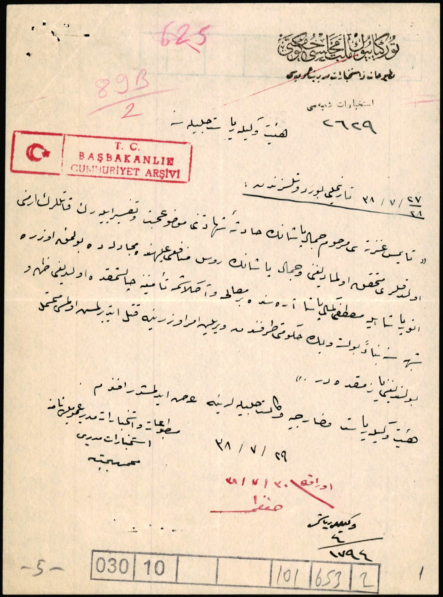

|
 |
Heyet vekili riyaseti celilesine37/38 / 7 / 28 Tarihli ?Tamis gazetesi merhum Cemal Paşa'nın hadisatı şehadetini mevzu-i bahis ve tagayyür eyleyerek katillerinin Ermeni oldukları muhakkak olmadığını ve Cemal Paşa'nın Rus münafığı aleyhinde mücadelede bulunmak üzere Enver Paşa ile Mustafa Kemal Paşa arasında bir musalaha ve anlaşma teminine çalışmakta olduğunu zuhur şüphesinden bolşevik hükümeti tarafından verilen emir üzerine katlettirilmesi olması muhtemel bulunduğunu yazmaktadır. Heyeti vekili riyaset ve hariciye vekaleti celilelerine arz edilmiştir efendim.Matbuat ve İstihbarat Müdürü Umumiyesi namına İstihbarat Müdürü() |